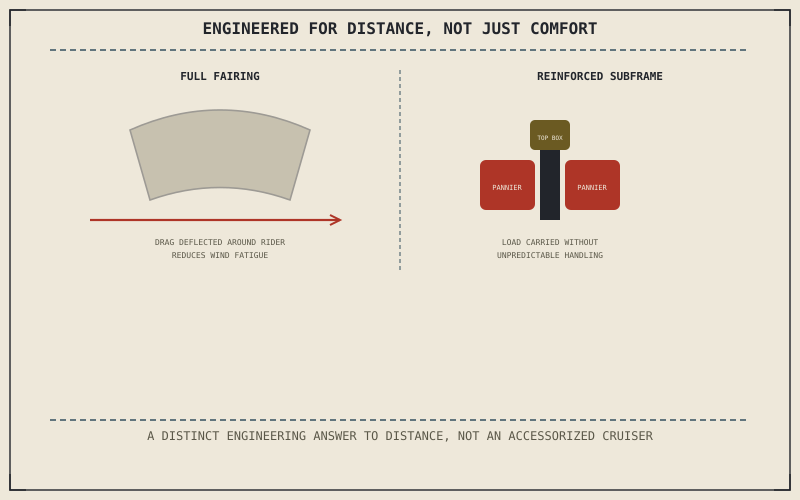

Chapter 14.3 covered comfort at low speed, close to home. A touring motorcycle shares that interest in comfort but adds a target neither the sportbike nor the cruiser was actually built around: sustaining that comfort, and real cargo capacity, over hundreds of miles at genuine speed rather than an afternoon ride.
Chapter 14.3 closed by pointing to exactly this: a category adding distance to comfort's list of requirements. This chapter is that category.
Wind Protection: Beyond a Cruiser's Comfort
Chapter 8.7 established aerodynamic drag growing with the square of speed, and Chapter 9.10 already connected that drag directly to physical wind fatigue over a sustained ride. A cruiser offers minimal or no wind protection at all, tolerable over the shorter rides Chapter 14.3 described; a touring motorcycle's large fairing and windscreen exist specifically to blunt that fatigue over the much longer distances this category is actually built for, going considerably further than Chapter 13.6's cosmetic fairing discussion treated as merely one option among several.
Cargo Capacity and Its Effect on Handling
Chapter 4.1 already warned that a chassis with excellent geometry but poor mass distribution produces a bike that steers well but handles unpredictably under load, and integrated hard luggage — panniers and a top box, often mounted high and to the sides or rear — is exactly the kind of load that warning describes. A touring motorcycle's frame and subframe are specifically reinforced to carry that load without the mass distribution problem Chapter 4.1 named, tolerating weight and positioning a standard or sportbike's chassis was never engineered to handle predictably.
A touring motorcycle's large fairing and reinforced, luggage-rated subframe aren't a cruiser with extra parts bolted on — they're specific engineering answers to a genuinely harder problem: sustaining comfort and stable handling under load across real distance, not just around town.

A diagram showing a touring motorcycle's large fairing reducing wind fatigue over distance, and a reinforced subframe carrying panniers and a top box without the mass-distribution handling problem an unreinforced chassis would suffer under the same load.
Comfort Systems Beyond Ergonomics
Chapter 13.4 covered ergonomic modifications as one way of closing a comfort gap; a touring motorcycle builds comfort in well beyond seat and bar position, adding heated grips and seats, cruise control, and a larger fuel tank specifically sized to extend range between stops. None of these individually define the category, but together they extend Chapter 13.1's comfort motive from a single ergonomic fix into a coordinated set of systems, all aimed at the same target of sustaining a long day in the saddle.
A Common Misconception, Cleared Up Early
It's a common assumption that a touring motorcycle is simply a cruiser with more accessories bolted on afterward — a fairing here, some luggage there. This chapter has shown the fairing and subframe specifically engineered around Chapter 8.7's drag physics and Chapter 4.1's mass-distribution warning, solving a genuinely different, harder problem than a cruiser's low-speed comfort was ever built to solve. A touring motorcycle is a distinct engineering answer to distance, not an accessorized cruiser.
Where This Leads
Chapter 14.5 turns to adventure and dual-sport motorcycles next, a category built for a problem neither comfort nor distance alone fully captures: genuinely uncertain terrain.
Key Concepts to Remember
- A touring fairing exists specifically to blunt the wind fatigue that grows with speed over genuinely long distances.
- A reinforced subframe carries luggage load without the unpredictable handling a mass-distribution mismatch would otherwise produce.
- Touring comfort extends well beyond ergonomics into coordinated systems — heated grips, cruise control, extended fuel range.
Cross-References
| ← Ch. 8.7 | Established aerodynamic drag scaling with the square of speed; this chapter treats a touring fairing as engineered specifically around that physics. |
| ← Ch. 4.1 | Warned that poor mass distribution produces unpredictable handling under load; this chapter treats a touring subframe as engineered specifically to avoid that outcome. |
| ← Ch. 13.1 | Established comfort as a genuine modification motive; this chapter extends that same motive into a coordinated set of factory-built systems. |
| → Ch. 14.5 | Covers adventure and dual-sport motorcycles, built for uncertain terrain. |